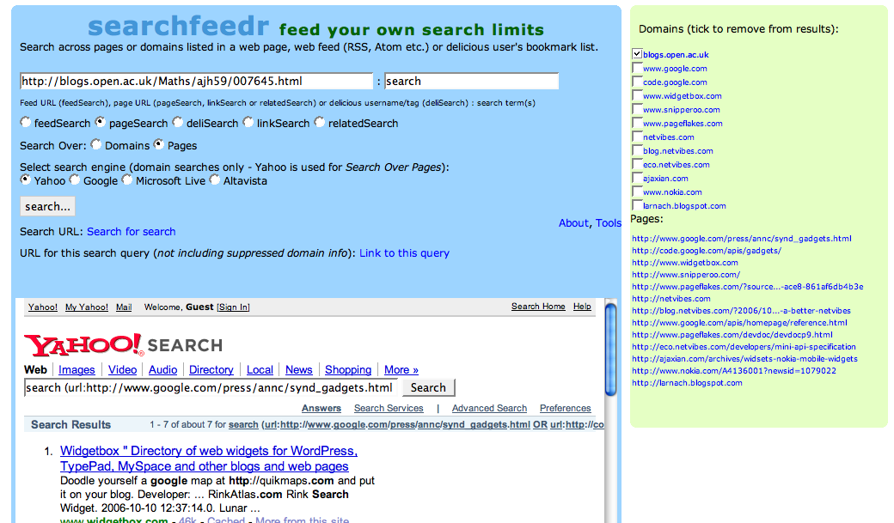

Another couple of pieces of the searchfeedr jigsaw fell into place tonight - a first attempt at styling using Nifty corners (I lost the e, so obviously rounded corners were next, right?) and the thing I've been putting off because it was a feature I wanted most - link lists showing the domains (and page links, if relevant) - that are being searched over.

To recap, searchfeedr allows you to add page and domain search limits to a search that can be carried out on the most popular web search engines, by automatically constructing advanced search queries for them.
The orginal inspiration - deliSearch - took the search limits from a user's tagged bookmark feeds on delicious. This approach was generalised so that links from any web feed (RSS, Atom) etc. could be used to pipe the search limits into searchfeedr.
The generalised searchfeedr approach can be easily customised. deliSearch is optimised to use a JSON feed from delicious, rather than an XML web feed - but it could just as easily be implemented using a delicous web feed (I intend to do this for popular delcious feeds). Customisations in the form of bookmarklets and Greasemonkey scripts that add a searchfeedr search box to technorati, H20 Playlists, Blinklist, Wink and more are already available as demos.
The labs site now supports several other searchfeedr inspired searches - pageLinks pulls in limts based on the outgoing links found on a web page with a particular URL; linkSearch searches over the pages (or domains) that link to a page with a given URL. relatedSearch uses the similicious service to find pages on delicious that are related to a page with a given URL.
Although developed originally for Yahoo! and the Yahoo! search API, the current version of searchfeedr loads in the actual search engine results page for a given search into an embedded iframe. This means that searchfeedr can actually be used to feed querries made to different search engines. At the moment, searchfeedr can create advanced search queries running domain limited searches for Yahoo!, Google, Microsoft Live and AltaVista.
The current labs version of searchfeedr has only been tested in Firefox 1.5 so far, and the design is intended for a 1024px width screen. If anyone does try it out, I'd be interested to hear how you get on.
Anyway - on with the story...
Having got the links up in a very short time frame, the 'suppress domains' feature jumped out at me. How it works is this:
- on hitting the search button, searchfeedr pulls in its search limits feed. This can be used to provide wither page or domain based search limits for the search query. That is, the search can be run over pages, or whole domains. The list of domains is extracted and popped into a domains list. If a page search is selected, the pages that ere being used as search limits are also listed.
- clicking on page or domain links opens up the corresponding web page in the iframe results area. This aspect of searchfeedr can thus be used to navigate links associated with a particular search hub. So for example, I can use this part of searchfeedr to navigate the links on a particular page, the links that link to that page, the links in a particular delcious tag feed, and so on. (Note that the number of links displayed is actually limited in number.)
- checking any of the domain checkboxes removes that domain (and in the case of page based searches, all pages based on that domain) from the search query, and reruns the search. This feature thus allows you to further prune a set of search results very quickly indeed.
Ho hum.... even though it only took a couple of hours to do these mods, it's used up loads of my creative energy... so time for a swift half, I think... and if you want to play, you can find the latest version at the searchfeedr labs.
Posted by ajh59 at October 13, 2006 10:31 PM